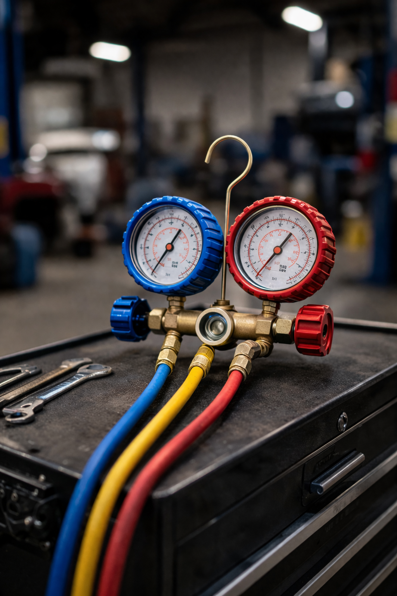
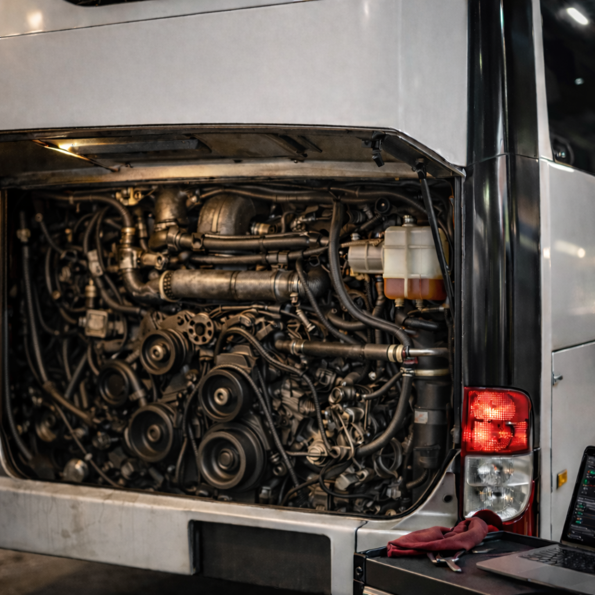

Northern Desert Mechanical supports customers who need more than basic service - from scheduled PMs to engine changes, field response, and equipment-specific repair work.
Routine maintenance is the backbone of reliable fleet and equipment performance. NDM provides scheduled service support designed to catch issues early and keep assets on predictable intervals.
HVAC systems on buses and commercial vehicles require real diagnostic skill - not just parts swapping. NDM specializes in AC and heating repair for mobile equipment, with deep experience across charter bus platforms and commercial fleets.

Charter bus repair is a core specialty for NDM. These units demand accurate diagnosis, dependable repair execution, and a shop that understands the urgency of keeping coaches on schedule.

NDM supports highway tractors and heavy commercial trucks with a strong focus on uptime, accurate diagnostics, and repair work that solves the real problem the first time.
Mining and industrial sites rely on diesel-powered support equipment that can't be left down. NDM services pump engines, light plants, and smaller diesel units used in demanding field conditions.
Mining and industrial support equipment service
Not every shop is set up for major repairs. NDM handles serious mechanical work for customers who need real capability, accurate diagnosis, and confidence in the repair plan.
Major mechanical repair capability
NDM operates with a dedicated shop and fully equipped field service trucks, including crane-supported capability for heavier repairs and component handling.
Field trucks and shop support working together
Operators who need dependable mechanical support and a shop that understands commercial passenger equipment.
Companies managing work trucks, semis, and service vehicles that require consistent maintenance support.
Operations depending on diesel-powered support units and equipment that must stay productive.
Commercial customers needing serious mechanical help rather than light-duty retail repair.
If you need maintenance support, field capability, or major repair work, Northern Desert Mechanical is ready to discuss the job.
Request Service